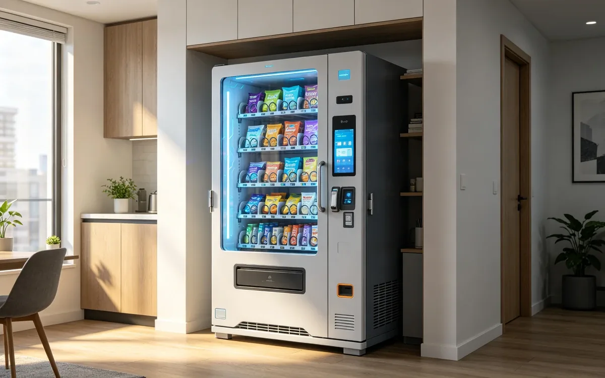

365 Retail Markets vs. Vistar: Unattended Retail Platforms Compared
Updated August 2026 · Editorial Team · 6 min read
365 Retail Markets and Vistar both power micro markets and unattended retail. Compare platform breadth, hardware options, and service before choosing.

Bottom line first
Both platforms run micro markets, kiosks, and unattended retail programs. 365 Retail Markets is known for its self-checkout kiosks and acquisition-driven ecosystem; Vistar for its route-based vending integration.
At a glance
| Factor | 365 Retail Markets | Vistar |
|---|---|---|
| Core strength | Micro markets and kiosks | Vending and micro markets |
| Hardware | Kiosks, smart coolers | Kiosks and readers |
| Platform | Cloud management | Route management software |
| North America | Strong | Strong |
What they do
Both provide the kiosk software, payment, and back-office platform that make unattended retail work. They differ in emphasis: 365 is equipment-led, Vistar is software-and-route-led.
Where each fits
- Choose 365 Retail Markets for turnkey micro-market deployments and AI smart-cooler options.
- Choose Vistar if you need deep route-management and vending software integration across a mixed fleet.
What to evaluate
| Question | Why it matters |
|---|---|
| Which kiosks are supported? | Determines your hardware choices |
| How does reporting work? | Affects restocking efficiency |
| What are the per-location fees? | Determines profitability |
| Who provides support? | Matters for uptime |
Decision guide
| Priority | Recommendation |
|---|---|
| Turnkey micro markets | 365 Retail Markets |
| Mixed vending fleet software | Vistar |
| AI smart coolers | 365 Retail Markets |
| Route optimization | Vistar |
Neutrality note
This comparison is based on public product information. Request current feature lists and pricing from both companies.
365-retail-markets vistar platforms